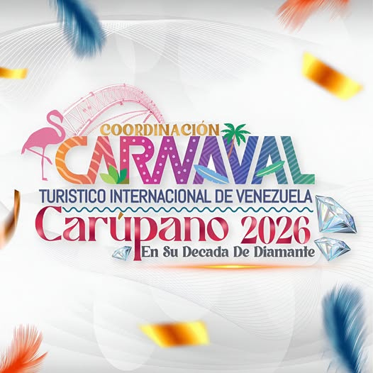
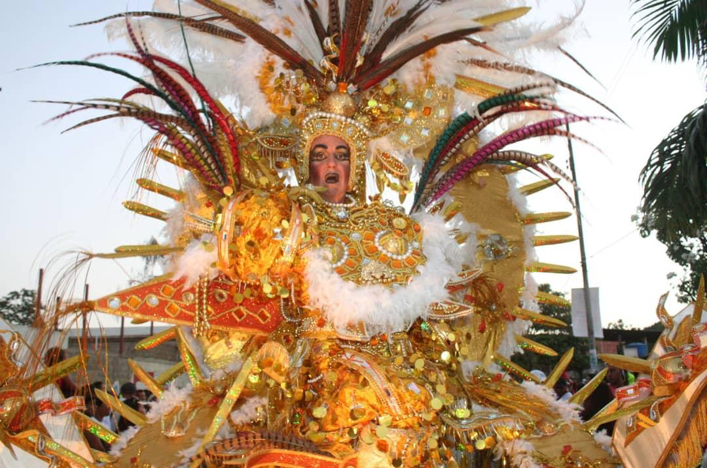
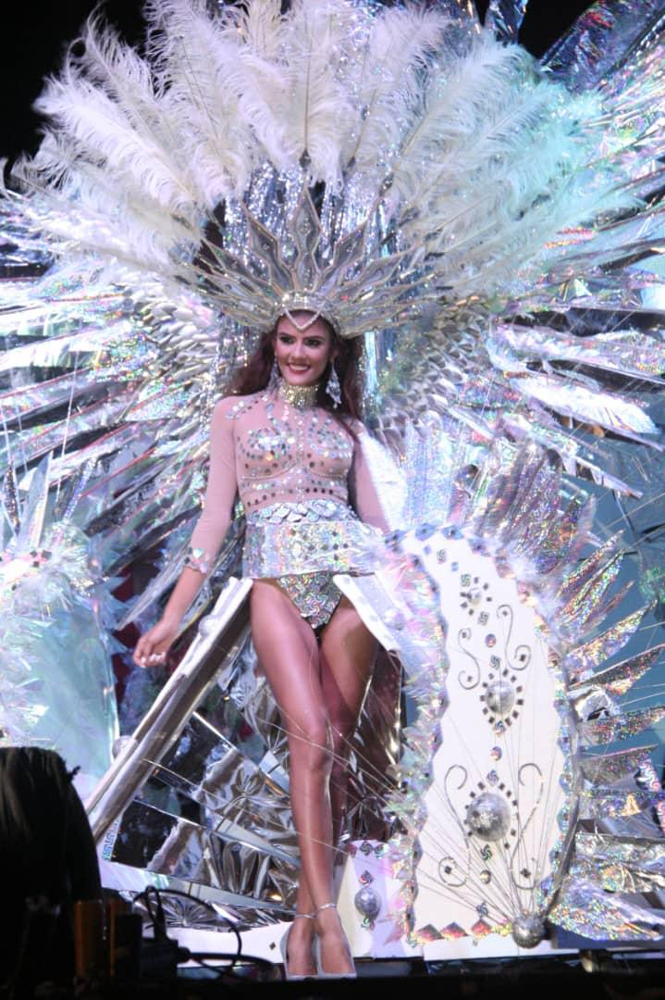
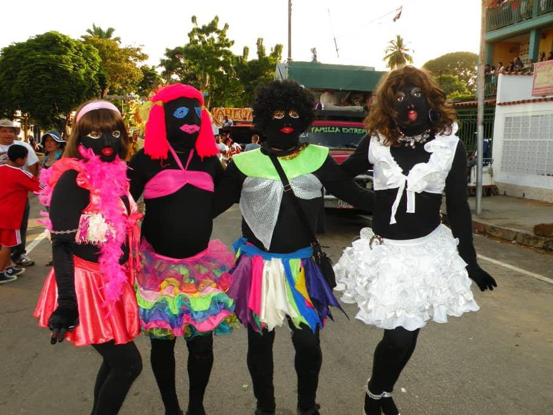

| Fecha | Actividad | Lugar | Hora | Participación |
|---|---|---|---|---|
| SABADO 07/02/26 | Presentación a la prensa | MACARAPANA | 07:00 pm | Grupos locales, animador, Mini Candidatas, Candidatas, bailarines, medios de comunicación e invitados especiales. |
| MARTES 10/02/26 | 2da Caravana Candidatas y mini candidatas | Calle juncal | 04:00 pm | Candidatas y Mini Candidatas |
| Viernes 13/02/26 | Elección y Coronación de la Reina Y Mini Reina del Carnaval | Parque Recreacional Rafael Montaño | 07:00 pm | Candidatas, Bailarines, Grupos Musicales- Nacionales y locales, animadores |
| Sábado 14/02/26 | Recorridos Musicales | Por las distintas calles de la ciudad | 09: 00 am | |
| Sábado 14/02/26 | nicio del desfile escolar | Parque Karupana Hasta el Templo Masónico | 04:00 pm | Escuelas e Instituciones, Mini Reinas |
| Sábado 14/02/26 | Carnaval Tradicional Elección y Coronación de muchachona | Concha acústica Luis Mariano Rivera | 07:00 pm | Muchachonas, bailarines y grupos musicales, personalidades invitadas |
| Sábado 14/02/26 | Concierto NOCHE DEL AMOR Y LA AMISTAD | Centro Recreacional y Cultural “Don Rafael Montaño” | 07:00 pm | Grupos musicales |
| Sábado 14/02/26 | AUTO SONIDO | Redoma de la Virgen | 08:00 pm | |
| Domingo 15/02/26 | COMPETENCIA CARROS LOCOS | Concha acústica Luis Mariano Rivera | 0:00 a.m | AUTOS LOCOS |
| Domingo 15/02/26 | 1ER Desfile del Carnaval tradicional | CARNAVALODROMO JUNCAL | 05:00 p.m | EINAS, MINI REINAS, BANDAS, CARROZAS, FANTASIAS, DESFILES, MINITECAS. |
| Domingo 15/02/26 | Noche RETRO | Concha acústica Luis Mariano Rivera | 08:00 p.m | MINITECAS |
| Domingo 15/02/26 | Concierto | Centro Recreacional y Cultural “Don Rafael Montaño” | 08:00 p.m | GRUPOS MUSICALES |
| Domingo 15/02/26 | AUTO SONIDO | Redoma de la Virgen | 08:00 pm | |
| LUNES 16/02/26 | Competencia botes peñeros | Frente al templo masónico | 10:00 a.m | Botes peñeros |
| LUNES 16/02/26 | 2do Desfile Integrados | CARNAVALODROMO JUNCAL | 04:00 p.m | Minitecas, carnaval tradicional y carnaval escolar, Carrozas y comparsas |
| LUNES 16/02/26 | Concierto | Centro Recreacional y Cultural “Don Rafael Montaño” | 08:00 p.m | INFINITY |
| LUNES 16/02/26 | ACTIVIDAD POLAR | Concha acústica Luis Mariano Rivera | 07:00 PM | |
| LUNES 16/02/26 | NOCHE DE BRUJAS | CARNAVALODROMO JUNCAL | 10:00 PM | CARROZAS Y COMPARSAS |
| Martes 17/02/26 | Desfile de cierre Carnaval | CARNAVALODROMO JUNCAL | 05:00 pm | Carrozas, comparsas, hacedores de fantasía, candidatas, diversiones populares, minitecas, comunidades, Bandas Show |
| Martes 17/02/26 | Concierto de cierre y festival pirotécnico | Complejo Recreacional y Cultural “Don Rafael Montaño” | 08:00 pm | INFINITY |
| Martes 17/02/26 | Fuegos Artificiales | 9:00 pm | ||
| Martes 17/02/26 | AUTO SONIDO | Redoma de la Virgen | 08:00 pm | EXHIBICIÓN DE LA CARROZA CARNIVAL FILM |